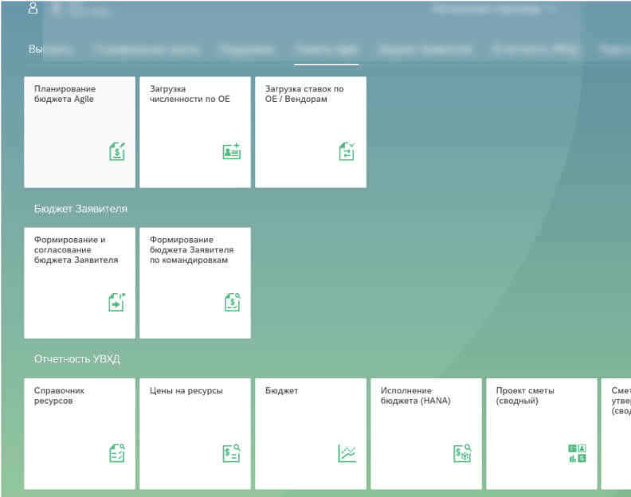
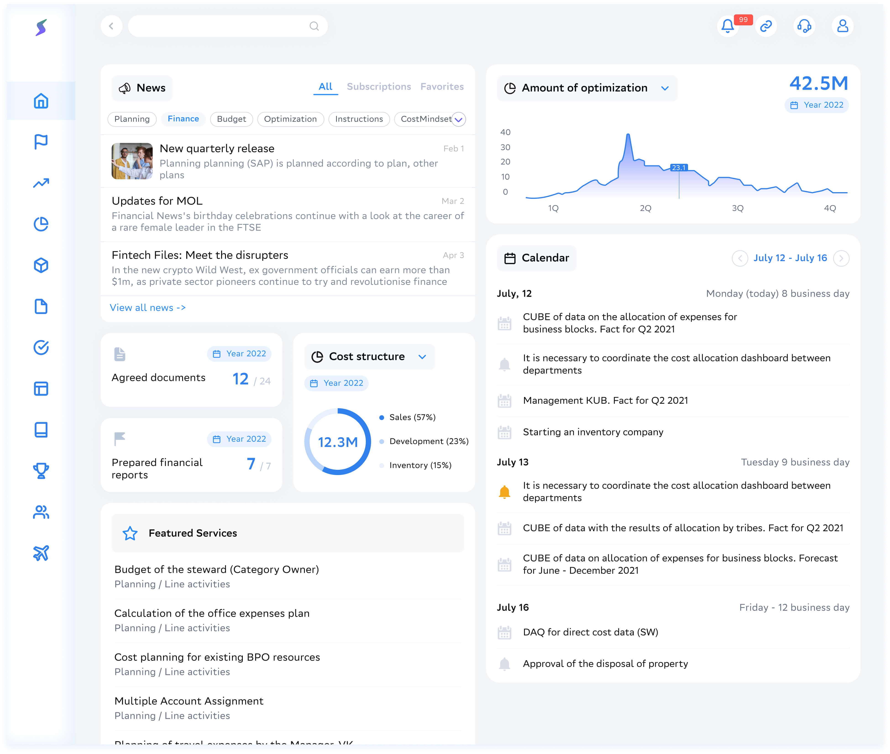
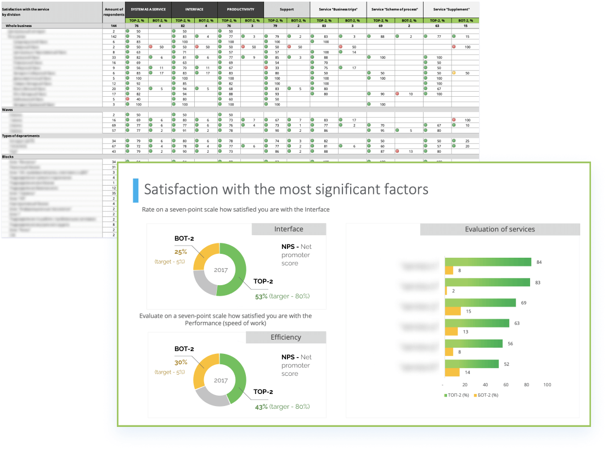

Cost Platform
PART 1: PLATFORM
Task:
Updating the financial platform Reasons: — transition to a new technology stack — the level of satisfaction with the interface (NPS TOP-2: 54% (target 80%) / BOT-2: 25% (target 5%)) and the convenience of working in the NPS system 54% over the past 4 years
Before
After
Background of the project
2015
Background
Many different financial services
With different architecture
NPS + Feedback from users (every half year - surveys)
More than 2 thousand feedback messages in two years have been received and many were not satisfied with the old tiled interface because a lot of time is spent searching for the right service.
Transition to a modern technology stack
From UI5 (SAP) to ReactJS
2020
Decision
Create one plafrom for all financial services
Project input data
CostPlatform is a platform that was supposed to replace the existing SAP system (Fiori) and also have the ability to quickly create new services based on standard solutions (components / developments). The platform consisted of a set of clickable links to various financial services.
Development tool: React JS / ABAP. I was the one UX/UI designer in the platform team.
- the platform must be scalable (Web / Mobile (native apps))
- initially, a Web platform is released in the prom
- modern and unified design of all services (the light theme should be the main one, it was necessary to create a UI Kit for components)
- no more than two levels in the menu (technical limitations)
In six months we have brought the project to prom. Current number of MAU (unique users) is about 20 thousand / DAU 2 thousand
Intro
What we had
One platfrom team
- PO
- 3 developers
- 1 designer
- 3 analytics
- 1 QA
Lack of resources
More than 100 services that should be hosted on the platform
Difficulties with unification and navigation
The first priority is the desktop version (2021), the mobile version according to the plan 2022
The decision I came to
MATERIAL DESIGN WITH SMALL CUSTOMIZATION
The project started with the Web version, because the key services for users of our platform were located in the internal domain, in the desktop. Material Design (2 / 3 (you)) allowed you to create services without loss of quality and bugs in a short time
Wireframing
What we had
We get all the best from our competitors: good simple design from HR system, categories navigation from support system and cards view from fiori
100 services were divided into 10 groups in which there could be up to 2 levels of nesting (one service could be in several groups). Users did not see everything at once, but only services depending on their role (analysts prepared a role model)
Prototype
Removing tiles
The Prototype of the light theme of the application was prepared for the control group of users. According to the results of the study, users were given feedback about the need to increase the resolution on small screens.
Grid
Grids of elements
Styles and components
Color palletes
I took three adjustment colors (from the primary color), then set the minimum contrast to 2 (for good accessibility) and created a material design palette with them. I always try to follow the principles of accessibility and use a linter for the purity of layouts
Relative Web
Grids
I have made up several sites (flex, grid), so I am familiar with the principles of relativity.
Mobile apps
Native applications
I have made up several sites (flex, grid), so I am familiar with the principles of relativity.
Final NPS
Net promoter score
A month after the main functionality was added to the platform, a survey was conducted on 267 pilot users. The survey showed that users positively assessed the changes in the speed of work in the system, the interface, and the effectiveness of interaction with the platform.